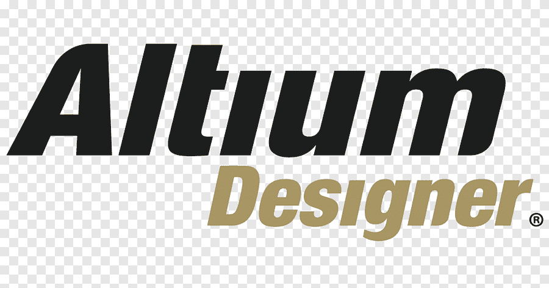

ESP32 "Raiz": Programando o Chip Puro com VS Code e PlatformIO
Saia das placas de desenvolvimento! Aprenda a usar o FTDI e o circuito de boot para programar o ESP32 diretamente na sua PCB customizada usando ESP-IDF.

Saia das placas de desenvolvimento! Aprenda a usar o FTDI e o circuito de boot para programar o ESP32 diretamente na sua PCB customizada usando ESP-IDF.

Para o nosso primeiro post, eu quis falar sobre a ferramenta que está no coração de quase todo projeto de PCB...

Veja como eu simulei um circuito oscilador analógico no Tinkercad e transformei em uma PCB profissional no Altium.